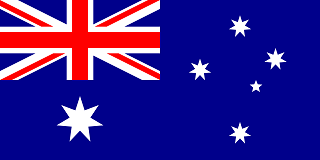

| MTA | GEO News | PTV Home | PTV News | PTV World | Geo Entertainment | GEO Tezz | Samaa TV | Hum TV | Dunya News |
Welcome to my website. This webiste was made to make tv viewing experience simple and easy. Even the official websites have too much of needless information and intresting part "the live stream" is buried inside all that information. This will probably make life easier for us. I hope you will enjoy this site and have fun.
Australian Channels